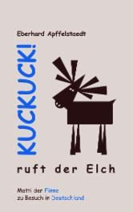

- Wir über uns
- Leitbild
- Kursangebot
- Angebote für Geflüchtete
- Kindergeburtstage
- "Unsere Welt braucht eineTherapie", Gesprächsabend am 22. Juni
- BGZ Sommerfest am 23. Juni
- Tanztheater "Weltenspringer" für Kids, Aufführung am 25. Juni im Rieckhof
- Ausstellungen
- Literaturcafé im Striepensaal
- AG Süderelbe-Archiv
- Kulturtage Süderelbe 2017 - 03. Nov. bis 19. Nov.
- Fortbildung zur Sprachförderkraft mit künstlerischen Mitteln
- Puppentheater Kollin Kläff: Termine ab Oktober 2017
- Kontakt / Impressum
- Hier finden Sie uns
- BGZ Süderelbe
- Links
-
Archiv
- PartyKunst - am 18. Mai im Haus der Jugend
- Kulturhausfest am So 7.5.17
- Matinee-Lesung über die Finnen und ihr Land von und mit E. Apffelstaedt am 07. Mai 17
- TUULETAR, Vocal Folk Hop aus Finnland am 05. Mai 17
- Südlesetage
- Hase - ohne Igel?! Weihnachtsmärchen am 13. Dez.
- Tonali Konzert am 12.11.16 um 18 Uhr
- Dirk Janssen: Expedition zu den Devils Holes in Venezuela, Vortrag am 10. Nov.
- Einmal China und zurück Ausstellung, Vernissage 7.11.16 19.30 Uhr
- Cajon Bau&Spiel-Workshop am 06. Nov. 16
- Johannes Kirchberg: HEUTE ZWISCHEN GESTERN UND MORGEN am 5. Nov.
- Lesung Sofia + Leonid Tolstoi 2.11.16, 19 Uhr
- Der kulturelle Rucksack
- Vernissage und Lesung: "Geschichten aus fünf Jahrhunderten" am 21. Okt.
- Christin Neddens' Oceanside Quartett am 28. Okt.
- 500 Jahre Neugraben
- Historisches Sommerfest, Stadtteilfest am 25. Juni
- Historische Rundgänge
- "KulturPinsel": Ausstellung in der Bücherhalle Harburg
- Theater Mär: "Die Königin der Farben" am 17. März
- Abi Wallenstein & Bluesculture am 22. Jan. 16
- Mittsommernachtstango - Musik u. Dokumentarfilm am 02. Nov.
- Theater UniVerbal: DIE DA! am 31. Okt.
- Tanztheater-Aktion "Games" für Kinder am 14. Juni
- Tag der offenen Tür am 30.05.15
- Blues Harp Workshop mit Steve Baker am 19. Okt. 14
- Walking Actors: "Ein bunter Strauß voll Leben" am 8. Nov.
- KulturDialog am 13.05.14
- Branimir Georgiev - Bilder aus Hamburg Süd - Vernissage am 5. Sept.
- Eröffnung BGZ Süderelbe am 29. Febr. 12
- Mosaikwand
- Ferienprogramm für Kinder
- Theatergruppe im Aufbau
Matinee-Lesung über die Finnen und ihr Land
von und mit Eberhard Apffelstaedt

|
 |

|
Am So, 07. Mai um 11.00 Uhr
|
Insgesamt drei amüsante und kurzweilige Bücher über die Finnen und ihr Land hat Eberhard Apffelstaedt inzwischen verfasst: „Finnen? Finnen!“, „Mehr Finnen? Mehr Finnen!“ und „Kuckuck! ruft der Elch“. Apffelstaedt, seit über 40 Jahren mit einer Finnin verheiratet, fühlt sich in Finnland wie zu Hause – „trotz und wegen der vielbeschworenen Schnaken, der durchaus bemerkenswerten finnischen Küche und der unfassbaren Sportbesessenheit der Finnen“, wie er sagt... Während Apffelstaedt in den beiden ersten Bänden liebevoll-ironisch die besondere Spezies der Nordländer schildert, speziell und exemplarisch am Beispiel seines besten finnischen Freundes Matti, kommt Matti mit Ehefrau Päivi in „Kuckuck! ruft der Elch“ erstmalig nach Deutschland. Und der Autor nutzt diese Gelegenheit, mittels Mattis sehr individuellen Umgangsformen auch zahlreiche deutsche Schrullen humorvoll überzeichnend aufs Korn zu nehmen. |
Im Rahmen der Veranstaltung spielt Eberhard Apffelstaedt
am Klavier einige Stücke eines mit ihm befreundeten finnischen Musikers.
Es verspricht ein fröhlicher Vormittag zu werden! In der Pause gibt es außer Kaffee und
Kuchen auch finnische Spezialitäten, wie "korvapuusti" und "karjalanpiirakka".
Der Eintritt ist frei.
Im Anschluss an die Lesung steht der Autor für Diskussion und zum Signieren seiner Bücher zur Verfügung.
Eine Veranstaltung in Kooperation mit der Deutsch-Finnishen-Gesellschaft (DFG) mit freundlicher Unterstützung durch Botschaft von Finnland in Berlin und Suomi Seura r.y.